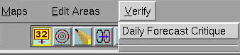
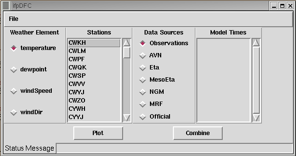

The Daily Forecast Critique (DFC) is a suite of
programs
that allows forecasters to compare forecasts (Official or model
forecasts)
to observations. With this first release, DFC only compare
point observations with point forecasts extracted from the
various
forecast grids. Future versions will allow forecasters to compare
gridded forecasts with gridded analyses, calculate statistics for use
in
a Smart Tool (to correct for any bias, for example), and provide a
flexible
framework within which forecasters can write tools to calculate their
own
statistics and summaries.
DFC comprises three different programs: a
programs
that archives point observations, a second that archives the extracts
point
forecasts from the various forecast grids, and a third that provides a
user interface that lets forecasters compare the observations to a
variety
of forecasts. The diagram below illustrates the relationship
between
these programs and the data that they generate or display.
The archiveObs process is launched automatically
from the ifpServer. It reads local observations from the AWIPS
surface
observations database and stores them in the observations
archive.
The archivePointFcst process is also launched from the
ifpServer.
It reads grids from the ifpServer, extracts the values at locations for
which we have observations and stores the point forecast in the
archive.
Since the archive processes archive local data only, you can configure
DFC to store data as far back in time as you like, provided you have
the
enough disk space. If DFC relied purely on the existing AWIPS
real-time
databases, you would be allow to view data that is only 1-2 days
old.
These archive processes and database allow you to extend that to
several
weeks. For more information on how to configure DFC, refer to the
DFC Configuration Guide.
The ifpDFC main program allows you to plot observations and
forecasts
extracted at a point on the same display. This allows you to
assess
the quality of not only your forecast, but forecasts objectively
derived
from models via ifpInit. This section show you how to start the
DFC
display program.
Starting DFC
You can start ifpDFC two different ways. The first way is to open
a terminal window and "cd' to the bin directory.
cd /awips/GFESuite/primary/bin
Your directory may be in a different location, depending on how your
office set up the directory structure at installation time. From this
directory
type:
ifpDFC
The other way to start the main DFC display is to select from the
main
menu bar in the GFE Verify->Daily Forecast Critique. This
menu item
is located just to the right if the Edit Areas menu item as in the
figure
below.

The complete command line is shown below:
ifpDFC -h serverhost -p serverport
Command Line
Switch
|
Mandatory/Optional
|
Description
|
-h serverhost
|
Mandatory (see Note)
|
Specifies the host running the
ifpServer.
|
-p serverport
|
Mandatory (see Note)
|
Specifies the port for the
ifpServer. |
Note: The -h and -p switches are predefined to
match your GFESuite installation, such that they will point to the
ifpServer
specified on installation. Thus the -h and -p switches are not
necessary
for normal running of this program. However, if you wish to
connect
to a different server, then you will need to specify the -h and -p
switches. If environment
variables ${CDSHOST} or
${CDSPORT} are defined, then the default server and port will be
determined from the environment variables, unless overridden with the
user specified -h and -p switches.
The DFC Interface
Once you successfully start ifpDFC, the DFC display will appear.
It should look something like this.

Note that the interface is divided into four sections: Weather
Element,
Stations, Data Sources, and ValidTime. Using the DFC interface,
you
may select these options to produce a plot of just the data you
want.
A description of each of these sections follows.
Weather Element
Selecting one of the Weather Element buttons will eventually cause a
time
series weather element to be displayed. At this early stage in
the
DFC development there are only four weather elements supported:
temperature,
dew point, wind speed and wind direction. Future versions will
hopefully
support more weather elements.
Stations
The next section, as you go left to right, is the Stations
listbox.
This widget allows you to select the station at which you want a time
series
display. You may only select one station at a time, but you can
combine
any time series with any other using the "Combine" button.
Data Sources
The Data Sources section allows you to specify the source of the point
data. The first entry is always "Observations". These
correspond
to surface observations such as METAR, mesonet, or RAWS sites.
Selecting
"Observations" will eventually generate a time series plot of observed
values vs. time.
Selecting either the observations or any of the models (either
numerical
models, MOS, or the Official) will generate a time series that shows
the
value of the weather element extracted from a point in the specified
IFP
model database. Note that these values are from the IFP database
not the D2D database. IFPInit must generate an IFP database
before
any model data can be displayed in DFC.
Model Times
If you select a model as your data source, the Model Times
section
will display a list of possible model times times to choose from.
These times are listed in mmDD_HHMM format, where mm is the numeric
month,
DD is the day of the month, HH is the hour and MM is the
minute.
This list is sorted so that the most recent models are on top. You may
select as many model times as you want to see displayed in the DFC
viewer.
Once you select the Plot or Combine button, you will see as many model
time series plots as you have selected in this column.
Plot Button
Once you have selected the data source, weather element, station, and
valid
time, you are ready to make a plot. To generate a plot,
simply
click on the button near the bottom of the interface labelled
"Plot".
Once you do this you should see a window appear that contains the time
series that you specified. Each time you click "Plot", a new
window
with the specified time series will appear.
To remove the window, just click on the icon in the window's title
bar
that is labelled with an "X". Since your window manager may vary,
this icon may be labelled differently or this action may be available
from
a pop-up menu invoked elsewhere on the window.
Combine Button
The "Combine" button works just like the "Plot" button except that the
new plot will appear in a new window overlaid with the data you plotted
previously. This allows you to overlay a model time series on top
of a plot of observations, or compare two models for the same station.
Note that if you change the Weather Element and then select
"Combine"
a new window will be automatically created, since plotting weather
elements
with different units would require more than one vertical data scale.
Status Message
At the very bottom if ther interface is the area where status messages
are displayed. Occasionally, you may forget to select a model
time
or data migh not be available. When events like these occur, a
message
is displayed to give you a hint about what to do next.